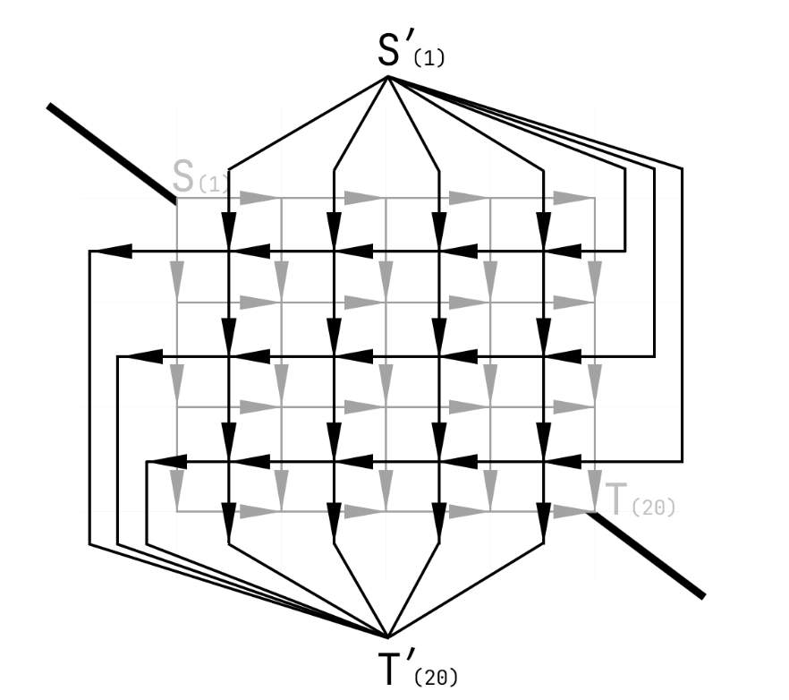
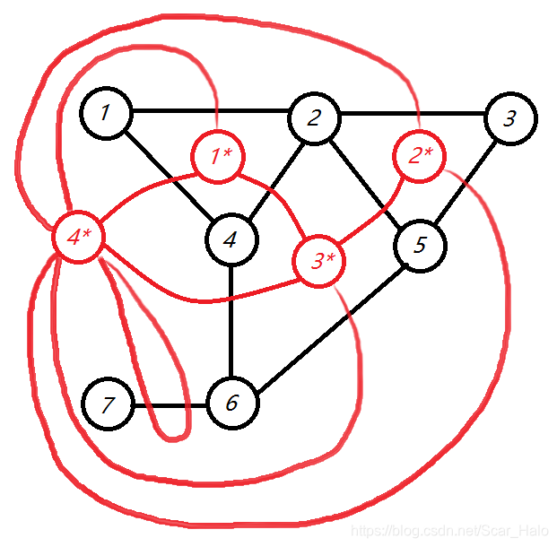
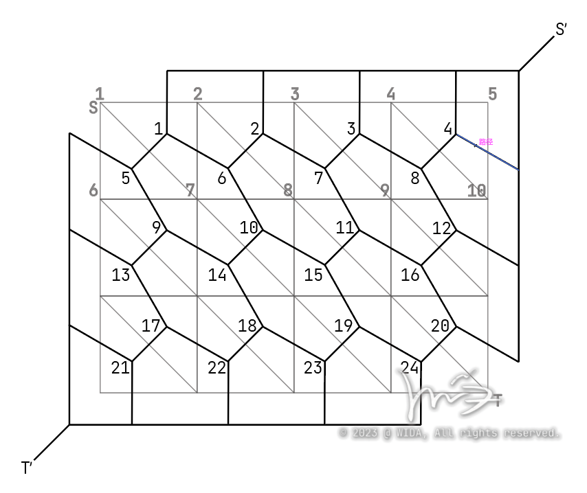

使用 $\tt Dinic$ 算法，理论最坏复杂度为 $\mathcal O(N^2M)$ ，一般用于处理 $N \le 10^5$ 。一般步骤：$\tt BFS$ 建立分层图，无回溯 $\tt DFS$ 寻找所有可行的增广路径。封装：求从点 $S$ 到点 $T$ 的最大流。
template <typename T> struct Flow_ {
const int n;
const T inf = std::numeric_limits<T>::max();
struct Edge {
int to;
T w;
Edge(int to, T w) : to(to), w(w) {}
};
vector<Edge> ver;
vector<vector<int>> h;
vector<int> cur, d;
Flow_(int n) : n(n + 1), h(n + 1) {}
void add(int u, int v, T c) {
h[u].push_back(ver.size());
ver.emplace_back(v, c);
h[v].push_back(ver.size());
ver.emplace_back(u, 0);
}
bool bfs(int s, int t) {
d.assign(n, -1);
d[s] = 0;
queue<int> q;
q.push(s);
while (!q.empty()) {
auto x = q.front();
q.pop();
for (auto it : h[x]) {
auto [y, w] = ver[it];
if (w && d[y] == -1) {
d[y] = d[x] + 1;
if (y == t) return true;
q.push(y);
}
}
}
return false;
}
T dfs(int u, int t, T f) {
if (u == t) return f;
auto r = f;
for (int &i = cur[u]; i < h[u].size(); i++) {
auto j = h[u][i];
auto &[v, c] = ver[j];
auto &[u, rc] = ver[j ^ 1];
if (c && d[v] == d[u] + 1) {
auto a = dfs(v, t, std::min(r, c));
c -= a;
rc += a;
r -= a;
if (!r) return f;
}
}
return f - r;
}
T work(int s, int t) {
T ans = 0;
while (bfs(s, t)) {
cur.assign(n, 0);
ans += dfs(s, t, inf);
}
return ans;
}
};
using Flow = Flow_<int>;
定义：找到边的数量最多的那个匹配。
一般我们规定，左半部包含 $n_1$ 个点（编号 $1 - n_1$），右半部包含 $n_2$ 个点（编号 $1-n_2$ ），保证任意一条边的两个端点都不可能在同一部分中。
如果使用匈牙利算法（KM算法）解复杂度为 $\mathcal O (NM)$ ；另外还有HopcroftKarp算法（HK算法、基于最大流模型）解，该算法基于网络流中的最大流模型，但是会比直接使用 $\tt dinic$ 算法更快，因为常数更小，最坏时间复杂度为 $\mathcal O(\sqrt NM)$ ，但实际运行复杂度还要比这一数字小上 $10$ 倍。
关于最小割，我比较认可一个不那么准确定义，因为它比较好理解，即：在一个图中，割去权值和最小的边集，使得这个图分成两个部分（剩余的部分不连通），切下来的权值和不一定最小的边集就叫做图的一个割，权值和最小的边集就叫做图的一个最小割。
最小割和最大流的关系非常微妙，它在数值上等于最大流，但是除此之外和最大流没什么特别关系。
常见为利润最大化问题。我使用这样一个经典模型来描述这一类问题：有若干个项目，每个项目都有一个回报；完成某个项目需要购买若干个材料，每个材料都有一个成本；求解你能赚取的最大利润，即要求回报之和减去成本之和最大。从数学上定义这个模型：有 $n$ 个项目，第 $i$ 个项目的回报为 $w_i$ 元；有 $m$ 个材料，第 $i$ 个材料的成本为 $a_i$ 元；已知完成第 $i$ 个项目需要购买哪一些材料，求最大收益。
我们可以将这一模型用一个有向网络来表示： - 建立超级源汇 $s,t$； - 对于每一个项目，从 $s$ 连边指向其，边权为 $w_i$； - 对于每一个材料，从其连边指向 $t$，边权为 $a_i$； - 对于完成项目所需要的材料，从项目连边指向每一个材料，边权为 $+\infty$ 。
先说结论，最大收益即为全部项目的回报之和 $\displaystyle\sum_{i=1}^n w_i$ 减去这个有向网络的最小割。再来考虑正确性，由于项目与材料间的关系是不可被破坏的，而最小割不会割掉边权极大的边，所以用 $+\infty$ 描述不能被割掉的边；如果割掉某一个项目，那么这个项目的利润就没了，所以用总利润减去；如果割掉某一个材料，那么这个材料的成本就没了，所以还是用总利润减去。完美。
严谨的证明请百度，我这里这样写是方便之后来回忆建图的正确性。
建图流程： - 找到能带来回报的点，从 $s$ 连边指向它们，并计算这些边的和； - 找到会产生成本的点，从它们连边指向 $t$； - 找到不可被破坏的关系，用边权 $+\infty$ 连接它们。
基于最大权闭合子图，但是情况更多变，通常又可以分为二者取一、集合划分，一般都会用到虚空建点的技巧（下方例题有提及），但是这样会导致复杂度上升，故有时候会采用更多技巧性的等价建图法来减少不必要的点和边。
平面图最短路在数值上是等价于最小割的，但是我们往往需要更优的复杂度，所以我们要用到“平面图转对偶图”的技巧，随后在转化完成的对偶图上运行最短路算法（djikstra、SPFA等）。等价公式为：$\text{最大流}=\text{最小割}=\text{平面图最短路}=\text{对偶图最短路}$。
下方简要介绍如何建立对偶图，针对矩阵式、类矩阵式的图，我们将源汇连接，随后，定义这条连线上方为新的源点、下方为新的汇点，再将原图的每一条有向边顺时针旋转 $90^{\circ}$ 即可，下方图示举例说明。

针对非矩阵式的图，我们首先确定新图的点的位置，即，每一个被围起来的区域都是一个点，最外围的区域自成一个点；随后确定边，即，对点与点之间相隔的那条边做垂线（也可以和矩阵式的一样都理解为顺时针旋转 $90^{\circ}$），连接两侧的点（边权同这一条边的边权）。这里特殊的，如果有孤立的点，那么最外围的区域需要绕过这个点所在的那条边建立一条连向自己的边（见图下方的那个环）。

必要剪枝：在求解最短路时，如果栈中元素恰好为 $t$，则直接中止循环，不需要算出全部答案。
vector<int> dis(t + 1, 1e9);
priority_queue<pii, vector<pii>, greater<pii>> q;
q.emplace(0, s);
dis[s] = 0;
vector<int> vis(t + 1);
while (q.size()) {
int x = q.top().second;
q.pop();
if (x == t) break; // 必要剪枝
if (vis[x]) continue;
vis[x] = 1;
for (auto [y, w] : ver[x]) {
if (dis[y] > dis[x] + w) {
dis[y] = dis[x] + w;
q.emplace(dis[y], y);
}
}
}
cout << dis[t] << endl;
Konig定理：最小点覆盖等价于最大匹配数。使用最小割求解。
模板。
模板，文不成文，读题有点难度。
几乎是模板。
题干文不成文……复杂度考察题。观察范围，发现暴力枚举+网络流的最坏复杂度是 $\mathcal O(B^2N^2M)$，预期最优复杂度为 $\mathcal O(B^2M\sqrt N)$，已经足以通过该题，故直接暴力枚举建 $B^2$ 个图即可。实测发现数据较弱，可以轻松通过。
题干文不成文……模拟题，按照题意顺序模拟即可，很**的题目。
有一个显然的优化是将最外层枚举改为二分查找，这样可以降一个 $B$ 到 $\log B$ ，多少有点用，但是数据范围实在太小，这点优化不如卡常来得有效，不必过多纠结。
注意本题需要输出方案，故我们只能选择最大流（其他算法应该也可以，但是可能比较难输出方案）。本题的第一个经典在于质数的统计，一般我们分出奇偶后，对奇数连源、对偶数连汇，然后枚举判定是否构成质数。第二个经典在于需要构环，故连接源汇的边权应当为 $2$。
故在残留网络上搜索方案时相对应的，奇数时使用正向边，无流量说明被使用；偶数时使用反向边，有流量说明被使用。
显然是二分图，稍微变形了一点点，匈牙利也能过，用HK直接跑到第一……
暴力枚举中心点，随后计算剩余网络的最大匹配数。
比较综合的一道题，但是各个算法的使用都不是特别困难。二分算出上限后连接全部不超过上限的边、随后跑网络流，属于比较典的东西了。
第一问是模板，第二问比较困难，容易想到建议另一个边权均为 $1$ 的网络然后再跑一遍最小割，然而这样是错误的：新图的答案并不对应给定图的最小割，hack数据见此。
所以这里采用一个智慧的数学技巧：将给定边权扩大后用末尾位记录第二问的答案，能同时跑出两个问的答案，分离后输出即可。
比较偏基础题，我们能够发现，由于值为 $0$ 的格子不与源汇相连接，故不影响答案，所以我们可以暴力连出所有的边，再将源点与羊连接、狼与汇点连接，直接用最小割来解决问题，注意这样暴力建图导致答案是翻倍的，所以要除以 $2$ 。
还有一个略微优化的技巧，即我们发现，羊与羊、狼与狼之间一定不会有栅栏，所以可以特判、跳过这样的情况，但是空地和空地间是有可能有栅栏的，所以不能跳过（因为这个WA了两发），这样建图答案就不用除以 $2$ 了。加上这个优化之后空间能小一半，速度也可以快一些。
有其他做法。按照题意模拟建图后跑最小割模板即可，注意给定的树是无向树，阴间出题人没有声明这一点，我直接WA……
这道题的难点在于要割掉的是点而不是边，所以我们这里使用“拆点”的图论技巧，将一个点拆成两个，他们中间连的边即为要被割掉的那条边。
需要注意的是，源汇点拆点后连边的边权应当为 INF ，因为源汇不能被删除，随后，在严格意义上我们需要将汇点修改为 $t+n$ ，然而因为边权无穷大，所以不修改也不影响答案；当然，还有一种做法是连边权为 $1$ 的边后将源点修改为 $s+n$ 、汇点不变。
相较于经典模型多了一个“租用”的操作，我们只需要将项目连向材料的边修改为租用价格即可，考虑正确性，如果租用价格低于成本，那么根据最大流原理，其会选取较低的租用价格。~~加了快读去掉 long long 后直接跑到了洛谷最快，有点离谱……~~
这道特殊的地方在于回报需要同时选择两个点才生效，为了处理，我们需要对给出的每一对点 $(x,y)$ 都多构造一个点 $u$，随后连接 $(u,x)$ 和 $(u,y)$ ，边权为 $+\infty$；再连接 $s$ 与 $u$，边权为回报。
刨开我不想谈的题面和输入格式，主要记录一下第二问这个典，需要对网络流的原理有基本理解，即求解图中哪些点被使用到了。我们需要遍历的点，如果它们的计数数组（在jiangly的模板中使用 d 数组记录）没有经过变化（在jiangly的模板中初值为 $-1$），那么说明这个点没有被使用过。
这道题的难点在于我们难以找出边权为 $+\infty$ 的哪些边（同时删除会导致设备脱离网络，即对应经典模型里面项目连接材料的边）。
有一种利用题目“dfs序”限制进行搜索的做法，但是较难，这里用的是更简单的方法：我们发现设备两侧的边一定不能同时被删除，所以先处理这些边，随后利用树形结构中每个点有且仅有一个父节点相连的特性，对每一条反向树边处理，就能达成和搜索一样的效果。
困难，不理解，先保留观点。
~~初见会感到比较困难，因为建图不是很好建，我翻看了很多题解，但是感觉都没能使我信服，所以我尝试换一个思路考虑。~~
~~由于初始时 $0/1$ 同时存在比较麻烦，我们不妨先考虑初始状态全为 $1$ 存在的情况，那么可以很方便的转化为经典模型——富人为任务，狗为材料；从人手里赢钱即为 $S$ 向人连一条权为 $w_i$ 的边；人指定狗即为人向狗连一条权为 $+\infty$ 的边；将狗变为 $0$ 即为狗向 $T$ 连一条权为 $v_i$ 的边。现在的问题在于朋友怎么办，这个好像是一个典，即如果是朋友，那么直接将 $w_i$ 变为 $w_i + d$，我暂时不是很明白为什么，这里先留一个坑。~~
~~随后我们考虑初始状态为 $0$ 的情况，这里用到的技巧是，先花费 $v_i$ 的代价将其变为 $1$，那么上述操作中的源汇将会反过来——将狗变为 $0$ 本质上是返还 $v_i$ 元，即为 $S$ 向狗连一条权为 $v_i$ 的边；……~~
复杂背景，需要谨慎考虑后建图，需要补题。
新建点最小割模板题。由于额外收益很碍眼，我们不妨先假设没有这个限制，那么要解决的就是如何处理二选一了，其实很好想，将 $s$ 看作其中一个选择，$t$ 看作另一个选择，只需要将全部收益都算入“回报之和”，这样一来，割掉连向 $t$ 的边就从“带来回报”变为了“产生成本”。
此时加入额外收益，我们发现这与 1082G 很相似，都是需要同时选择多个点才生效，所以我们建立虚空点进行处理，需要注意的是，由于是二者取一，所以我们在这里要建立两个虚空点，代表两种不同选择。
需要注意的是，最终网络流里的点的数量至多为 $n+m+m$ ，要注意结构体不要开小了。
P1361加强版，套路一致。
题目看起来很复杂，其实可以化简，比如这个 $k$ 个相邻区域，我们拆分成：如果区域 $(i,j)$ 上方相邻格（如果存在）不同于自己，额外增加 $c_{i,j}$；下方相邻格（如果存在）不同于自己，再额外增加 $c_{i,j}$；……，在建图时会容易很多。
此时我们发现“不同于自己”较难构造，能否变成“相同于自己”呢，其实是可以的，且不会额外引入别的平衡边，我们只需要将矩阵黑白染色，对于黑色格子，交换其于源汇连接的边即可：假设原先的边为 $(s,now,a_{i,j}),\ (now,t,b_{i,j})$，现在修改为 $(s,now,b_{i,j}),\ (now,t,a_{i,j})$。剩下的内容便是 P1361 的重复。
我们规定一条公路为 $x$ 到 $y$，属于 $A$ 国时得到 $a$、属于 $B$ 国时得到 $b$、不属于任何一国时扣除 $c$。
最简单的做法自然是新建点最小割，与上面不同的地方在于如果一条边两侧的点分属不同集合，要额外扣除得分 $c$，我们采用和 P4177 一样的处理方式，在 $x,y$ 间连边权为 $c$ 的双向边即可。考虑正确性，假设 $x$ 划分在 $A$ 集合、$y$ 划分在 $B$ 集合，那么根据最大流的特性，这一条边必定会被割掉，变相满足题意要求，成立。
int cnt = n;
for (int i = 1; i <= m; i++) {
int x, y, a, b, c;
cin >> x >> y >> a >> b >> c;
sum += a + b;
flow.add(s, ++cnt, a);
flow.add(cnt, x, inf);
flow.add(cnt, y, inf);
flow.add(++cnt, t, b);
flow.add(x, cnt, inf);
flow.add(y, cnt, inf);
flow.add(x, y, c);
flow.add(y, x, c);
}
第二种处理思路是针对添边这一步进行优化，即将 $c$ 加入到总回报之和中去，随后将 $a,b$ 修改为 $a+c$ 和 $b+c$。考虑正确性，假设 $x$ 划分在 $A$ 集合、$y$ 划分在 $B$ 集合，那么新加入的这两个 $c$ 均会被包含到最大流里，使用总回报之和减去后相当于减去了一个 $c$，成立。
int cnt = n;
for (int i = 1; i <= m; i++) {
int x, y, a, b, c;
cin >> x >> y >> a >> b >> c;
sum += a + b + c;
flow.add(s, ++cnt, a + c);
flow.add(cnt, x, inf);
flow.add(cnt, y, inf);
flow.add(++cnt, t, b + c);
flow.add(x, cnt, inf);
flow.add(y, cnt, inf);
}
由于新建点会增加整体复杂度，所以上面两种做法耗时都很长，我们尝试不进行新建点解决本题——既然是两个城市划分，那么将边权除以 $2$ 处理。具体来说，连边 $(s,x,\frac{a}{2}),\ (s,y,\frac{a}{2}),\ (x,t,\frac{b}{2}),\ (y,t,\frac{b}{2})$ 针对扣除得分，连双向边 $(x,y,\frac{a}{2}+\frac{b}{2}+c)$。考虑正确性发现完全满足题意，为了避免小数的产生只需要整体乘以 $2$ 即可。用这个方法可以轻松跑到洛谷前五，简单优化（ll 改 int，fread读入）后现在排第二。
简单计算复杂度，最大流平均 $\mathcal O(N^2M)$ 复杂度在本题中约为 $500^3*4=5E8$，直接使用最小割模板较难通过，故建立对偶图（实测最小割能拿90分）。本题所给定的图属于标准的矩阵，比较适合当模板题，但是数据给出的顺序比较阴间。这里给出原图的建图代码：
for (int i = 1; i <= n + 1; i++) {
for (int j = 1, w; j <= n; j++) {
cin >> w;
flow.add(Hash(i, j), Hash(i, j + 1), w);
}
}
for (int i = 1; i <= n; i++) {
for (int j = 1, w; j <= n + 1; j++) {
cin >> w;
flow.add(Hash(i, j), Hash(i + 1, j), w);
}
}
for (int i = 1; i <= n + 1; i++) {
for (int j = 2, w; j <= n + 1; j++) {
cin >> w;
flow.add(Hash(i, j), Hash(i, j - 1), w);
}
}
for (int i = 2; i <= n + 1; i++) {
for (int j = 1, w; j <= n + 1; j++) {
cin >> w;
flow.add(Hash(i, j), Hash(i - 1, j), w);
}
}
随后我们针对这些边建立相对应的对偶图：
for (int i = 1; i <= n + 1; i++) {
for (int j = 1, w; j <= n; j++) {
cin >> w;
int pre = Hash(i - 1, j), now = Hash(i, j);
if (i == 1) {
add(s, now, w);
} else if (i == n + 1) {
add(pre, t, w);
} else {
add(pre, now, w);
}
// flow.add(Hash(i, j), Hash(i, j + 1), w);
}
}
for (int i = 1; i <= n; i++) {
for (int j = 1, w; j <= n + 1; j++) {
cin >> w;
int now = Hash(i, j), net = Hash(i, j - 1);
if (j == 1) {
add(now, t, w);
} else if (j == n + 1) {
add(s, net, w);
} else {
add(now, net, w);
}
// flow.add(Hash(i, j), Hash(i + 1, j), w);
}
}
for (int i = 1; i <= n + 1; i++) {
for (int j = 1, w; j <= n; j++) {
cin >> w;
int now = Hash(i, j), net = Hash(i - 1, j);
if (i == 1) {
add(now, s, w);
} else if (i == n + 1) {
add(t, net, w);
} else {
add(now, net, w);
}
// flow.add(Hash(i, j), Hash(i, j - 1), w);
}
}
for (int i = 1; i <= n; i++) {
for (int j = 1, w; j <= n + 1; j++) {
cin >> w;
int pre = Hash(i, j - 1), now = Hash(i, j);
if (j == 1) {
add(t, now, w);
} else if (j == n + 1) {
add(pre, s, w);
} else {
add(pre, now, w);
}
// flow.add(Hash(i, j), Hash(i - 1, j), w);
}
}
有其他做法。这一题的数据范围虽大，但是实测没卡满，直接使用最小割也能通过，注意数据卡 ll，记得换回 int；如果采用建立对偶图法，需要注意图中存在斜边。

初学这道题，我在建图时采用的离线法，$A,B,C$ 三个数组储存读入的数据，见下方代码：
for (int i = 1; i <= n; i++) {
for (int j = 1; j <= m; j++) {
int idx = (i + 1) / 2;
int pre = Hash(i - 1, j), now = Hash(i, j);
if (i % 2 == 0 && i == n) {
add(now, t, A[idx + 1][j]);
} else if (i % 2 && i == 1) { // 横边
add(s, now, A[idx][j]);
} else if (i % 2) {
add(pre, now, A[idx][j]);
}
int net = Hash(i + 1, j + 1);
if (i % 2 == 0 && j == 1) { // 竖边
add(t, now, B[idx][j]);
} else if (i % 2 && j == m) {
add(now, s, B[idx][j + 1]);
} else if (i % 2) {
add(now, net, B[idx][j + 1]);
}
pre = Hash(i + 1, j);
if (i % 2) { // 斜边
add(now, pre, C[idx][j]);
}
}
}
后来使用在线法也写了一发，很难写，基本是写一步调一步……
for (int i = 1; i <= n; i++) { // 横边
for (int j = 1, w; j < m; j++) {
cin >> w;
if (i == 1) {
add(s, Hash(i, j), w);
} else if (i == n) {
add(Hash(2 * (i - 1), j), t, w);
} else {
add(Hash(2 * (i - 1), j), Hash(2 * (i - 1) + 1, j), w);
}
}
}
for (int i = 1; i < n; i++) { // 竖边
for (int j = 1, w; j <= m; j++) {
cin >> w;
if (j == 1) {
add(t, Hash(2 * i, j), w);
} else if (j == m) {
add(Hash(2 * i - 1, j - 1), s, w);
} else {
add(Hash(2 * i - 1, j - 1), Hash(2 * i, j), w);
}
}
}
for (int i = 1; i < n; i++) { // 斜边
for (int j = 1, w; j < m; j++) {
cin >> w;
add(Hash(2 * i - 1, j), Hash(2 * i, j), w);
}
}
模板。
P3355的略微变形。